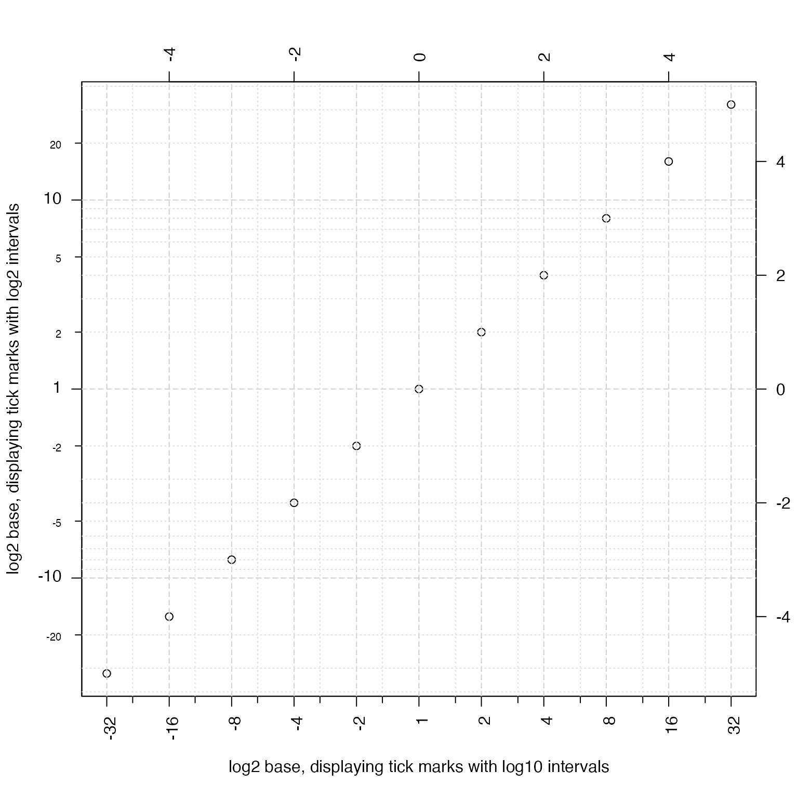

Display major and minor tick marks for log-scale axis,
with optional offset for proper labeling of log2(1+x).
minorLogTicksAxis(side = NULL, lims = NULL, logBase = 2, displayBase = 10, offset = 0, symmetricZero = (offset > 0), majorCex = 1, minorCex = 0.65, doMajor = TRUE, doLabels = TRUE, doMinorLabels = TRUE, asValues = TRUE, padj = NULL, doFormat = TRUE, big.mark = ",", scipen = 10, minorWhich = c(2, 5), logStep = 1, cex = 1, las = 2, col = "black", col.ticks = col, minorLogTicksData = NULL, verbose = FALSE, ...)
Arguments
| side | integer indicating the axis side, 1=bottom, 2=left, 3=top, 4=right. |
|---|---|
| lims | NULL or numeric range for which the axis tick marks
will be determined. If NULL then the corresponding |
| logBase | numeric value indicating the log base units, which
will be used similar to how |
| displayBase | numeric value indicating the log base units to use when determining the numeric label position. For example, data may be log2 scaled, and yet it is visually intuitive to show log transformed axis units in base 10 units. See examples. |
| offset | numeric offset used in transforming the
numeric data displayed on this axis. For example, a common
technique is to transform data using |
| symmetricZero | logical indicating whether numeric values
are symmetric around zero. For example, log fold changes should
use |
| majorCex, minorCex | the base text size factors, relative
to cex=1 for default text size. These factors are applied in
addition to existing |
| padj | numeric vector length 2, which is used to position
axis labels for the minor and major labels, respectively. For
example, |
| doFormat | logical indicating whether to apply |
| big.mark, scipen | parameters passed to |
| minorWhich | integer vector indicating which of the minor tick
marks should be labeled. Labels are generally numbered from |
| cex, col, col.ticks, las | parameters used for axis label size, axis label colors, axis tick mark colors, and label text orientation, respectively. |
| minorLogTicksData | a list object created by running
|
| verbose | logical indicating whether to print verbose output. |
Value
A list with vectors of majorLabels, majorTicks, minorLabels,
minorTicks, and allLabelsDF which is a data.frame containing
all axis tick positions, with corresponding labels.
Details
This function displays log units on the axis of an
existing base R plot. It calls jamba::minorLogTicks() which
calculates appropriate tick and label positions.
Note: This function assumes the axis values have already been
log-transformed. Make sure to adjust the offset to reflect
the method of log-transformation, for example:
log2(1+x)would requirelogBase=2andoffset=1in order to represent values properly at or near zero.log(0.5+x)would requirelogBase=exp(1)andoffset=0.5.log10(x)would requirelogBase=10andoffset=0.
The defaults logBase=2 and displayBase=10 assume data
has been log2-transformed, and displays tick marks using the
common base of 10. To display tick marks at two-fold intervals,
use displayBase=2.
This function was motivated in order to label log-transformed
data properly in some special cases, like using log2(1+x)
where the resulting values are shifted "off by one" using
standard log-scaled axis tick marks and labels.
For log fold changes, set symmetricZero=TRUE, which will
create negative log scaled fold change values as needed for
negative values. For example, this option would label a
logBase=2 value of -2 as -4 and not as 0.25.
Note that by default, whenever offset > 0 the argument
symmetricZero=TRUE is also defined, since a negative value in
that scenario has little meaning. This behavior can be turned
off by setting symmetricZero=FALSE.
See also
Other jam plot functions: adjustAxisLabelMargins,
coordPresets, decideMfrow,
drawLabels, getPlotAspect,
imageByColors, imageDefault,
nullPlot, plotPolygonDensity,
plotSmoothScatter,
shadowText, showColors,
smoothScatterJam, sqrtAxis,
usrBox
Examples
#> Warning: arguments 'col', 'border', 'main', 'ylab', '...' are not made use of#> Warning: 'x' is NULL so the result will be NULLplotPolygonDensity(0:100, breaks=100, log="x", main="plotPolygonDensity() uses minorLogTicksAxis()", xlab="x (log-scaled)");#> Warning: arguments 'col', 'border', 'main', 'xlab', 'ylab', '...' are not made use of#> ## (16:17:04) 27Feb2019: majorTicks:0.301030,1.041393,2.004321,3.000434 #> ## (16:17:04) 27Feb2019: majorLabels:1,10,100,1000#> Warning: In density.default(x, width = width, weight = rep(weightFactor, #> length.out = length(x)), ...) : #> extra argument 'xlab' will be disregarded#> Warning: 'x' is NULL so the result will be NULLplotPolygonDensity(log2(1+0:100), breaks=100, main="manually called minorLogTicksAxis(logBase=2)", xaxt="n", xlab="x (log-scaled)");#> Warning: arguments 'col', 'border', 'main', 'xlab', 'ylab', '...' are not made use of#> Warning: In density.default(x, width = width, weight = rep(weightFactor, #> length.out = length(x)), ...) : #> extra arguments 'xaxt', 'xlab' will be disregarded#> Warning: 'x' is NULL so the result will be NULLminorLogTicksAxis(1, offset=1, logBase=2);#> ## (16:17:04) 27Feb2019: adjusting logBase to displayBase. #> ## (16:17:04) 27Feb2019: majorTicks:1.000000,3.459432,6.658211,9.967226 #> ## (16:17:04) 27Feb2019: majorLabels:1,10,100,1000plotPolygonDensity(log10(1+0:100), breaks=100, main="manually called minorLogTicksAxis(logBase=10)", xaxt="n", xlab="x (log-scaled)");#> Warning: arguments 'col', 'border', 'main', 'xlab', 'ylab', '...' are not made use of#> Warning: In density.default(x, width = width, weight = rep(weightFactor, #> length.out = length(x)), ...) : #> extra arguments 'xaxt', 'xlab' will be disregarded#> Warning: 'x' is NULL so the result will be NULLminorLogTicksAxis(1, offset=1, logBase=10);#> ## (16:17:04) 27Feb2019: majorTicks:0.301030,1.041393,2.004321,3.000434 #> ## (16:17:04) 27Feb2019: majorLabels:1,10,100,1000plotPolygonDensity(log10(1+0:100), breaks=100, main="using 'minorWhich=2:9'", xaxt="n", xlab="x (log-scaled)");#> Warning: arguments 'col', 'border', 'main', 'xlab', 'ylab', '...' are not made use of#> Warning: In density.default(x, width = width, weight = rep(weightFactor, #> length.out = length(x)), ...) : #> extra arguments 'xaxt', 'xlab' will be disregarded#> Warning: 'x' is NULL so the result will be NULLminorLogTicksAxis(1, offset=1, logBase=10, minorWhich=2:9);#> ## (16:17:04) 27Feb2019: majorTicks:0.301030,1.041393,2.004321,3.000434 #> ## (16:17:04) 27Feb2019: majorLabels:1,10,100,1000